Eu sou livre? A noção de destino deriva da infinita distância entre o divino e nós — e coloca em questão a própria liberdade humana.
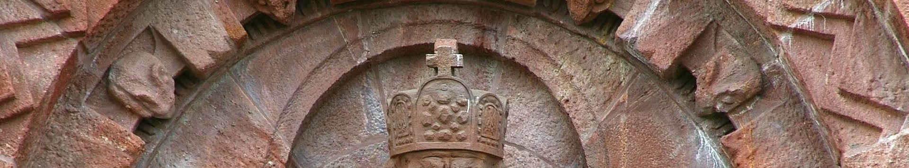
Monumento à unificação da Alemanha, Nikolaus Geiger, ca. 1890-6, Turíngia. A onisciência e onipotência divinas parecem esmagar a liberdade humana.
Se a divindade tudo sabe e tudo pode, resta algum espaço para a liberdade humana?
Se a divindade conhece tudo de antemão, sabe agora o que farei amanhã, e portanto o que farei tem de acontecer necessariamente.
Se é todo-poderoso, não passo de um fantoche, sem poder próprio.
Se Deus já sabe se vou me salvar ou me condenar, mesmo que eu atue livremente ao longo da vida, isso não alterará o resultado final. A liberdade, neste caso, é um simulacro.
No entanto, a noção de destino também apresenta um aspecto psicológico interessante: eliminando a liberdade, elimina também a responsabilidade.
A noção de destino deriva da infinita distância entre o divino e nós. Se a divindade conhece tudo de antemão, o que farei amanhã tem de acontecer necessariamente.
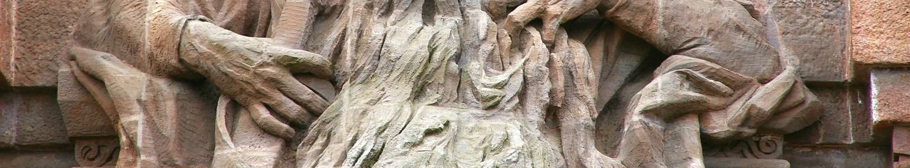
Estátua colossal do deus babilônio Nabu, deus da escrita, dos escribas e da sabedoria, e responsável por anotar os destinos dos seres humanos. Séc. VIII a.C., Nimrud, Museu Nacional do Iraque, Bagdá.
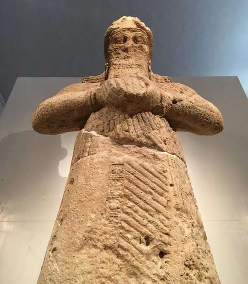
A deusa greco-romana Fortuna, com o leme com que dirige a vida dos homens e a cornucópia com que concede abundância a alguns. Séc. I AD, Museo Chiaramonti Braccio Nuovo, Musei Vaticani.
Fortuna pode ser traduzida como "destino", "boa sorte" ou "acaso".
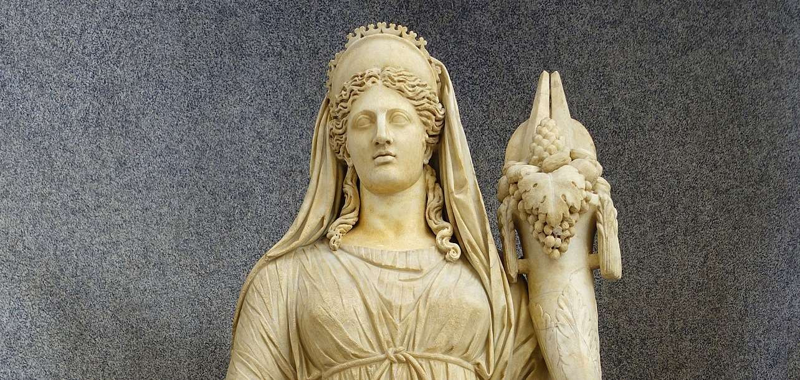
O rei Peleu, pai de Achilles, e as três Moiras, mosaico do "Banho de Aquiles", "Casa de Teseu", Parque Arqueológico de Pafos, Chipre.
As Moiras eram divindades que presidiam ao destino dos seres humanos: Clotho (centr.) tecia o fio da vida, Láquesis media o que caberia a cada um, e Átropos ("a inevitável", dir.) o cortava.
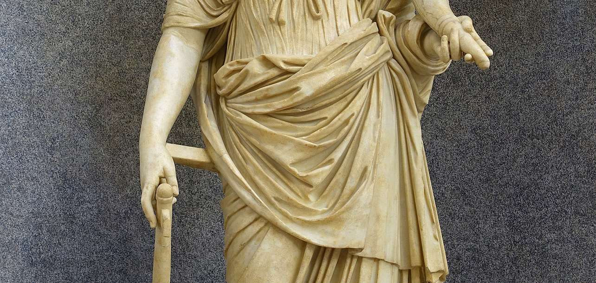
Templete de Nêmesis, duplamente representada, final do séc. II–começo do III, Museu Nacional de História e Arqueologia da Romênia, Constanța.
Nêmesis é a personificação da justiça divina, de que nenhum pecador é capaz de fugir.
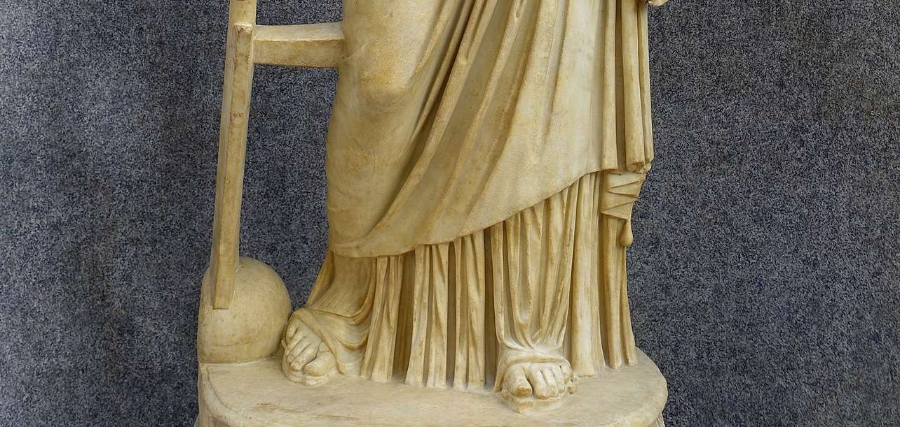
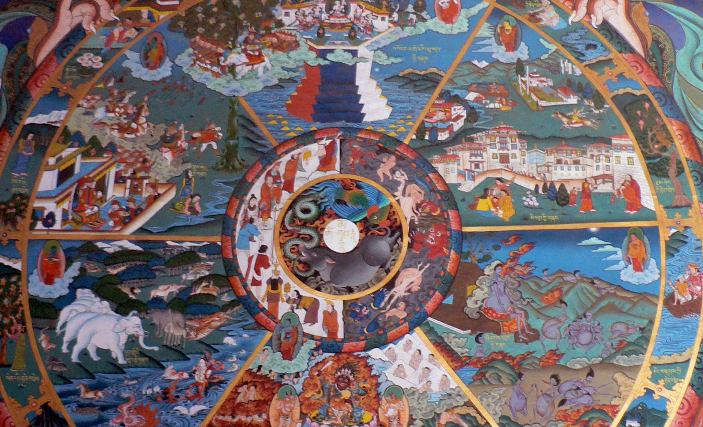
Mural da Roda da Vida ou Bhavacakra, provavelmente séc. XVIII, no mosteiro budista fortificado de Trongsa Dzong, Butão.
No centro, os "três venenos" do ser humano, representados por um porco, um galo e uma serpente: a ignorância, o apego e a aversão.
A segunda camada representa o karma; a terceira, o samsara, o universo do devir e das reencarnações com os "Seis Caminhos". A quarta são os "Doze elos da originação dependente".
Para o budismo e hinduísmo, a pessoa é responsável pelos seus atos, mas está atrelada à roda das encarnações e, em última análise, deixará de existir quando se unir ao divino.
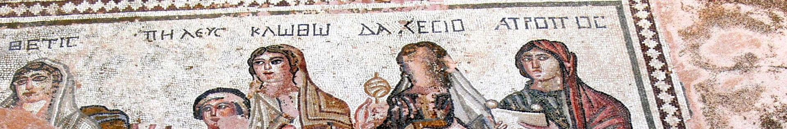
A roda da Fortune, iluminura do manuscrito de John Lydgate, Troy Book and Siege of Thebes, ca. 1457, Royal 18 D. ii, f. 30v, British Library.
Fortuna está atrás da roda, girando-a; no alto está o rei; à direita, ele está destronado, depois empobrecido e acaba em baixo, como camponês. À esquerda, estão os ambiciosos escalando, com a esperança de virem a reinar.
Aqui, Fortuna representa o acaso na sua interação com os vícios humanos.
A noção de destino varia profundamente entre as grandes tradições religiosas.
O "destino" é parte integrante das religiões greco-romanas, mas quase inexistente para os monoteísmos.
Para o judaísmo, o cristianismo e o Islã shiita, o homem é livre, e portanto plenamente responsável pelos seus atos.
O cristianismo conclui que Deus é o garante da nossa liberdade, porque quer se abster de interferir na nossa vontade, embora conheça todas as causas e consequências.
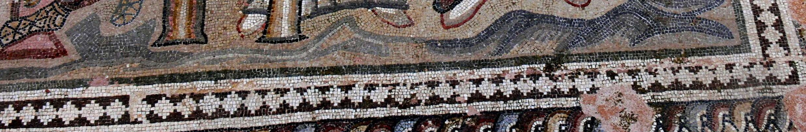
João Calvino quando jovem, séc. XVI, Biblioteca pública e universitária de Genebra.
Em 1536, o teólogo e reformador protestante João Calvino proclamou a doutrina da predestinação: "Os homens não são criados em termos iguais, mas alguns são predestinados à vida eterna, e outros à condenação eterna" (Instituciones christianae).
Ele mesmo chama a isso "horribile decretum", mas as igrejas que seguem o calvinismo adotam essa doutrina, embora com alguns matizes.
A posição clássica da Igreja católica e da maioria das outras igrejas cristãs é que Deus predestina todos os seres humanos à salvação, mas protege a liberdade que têm de condenar-se, se assim o quiserem.
Os homens não são criados em termos iguais, mas alguns são predestinados à vida eterna, e outros à condenação eterna.
— João Calvino, Instituciones christianae, 1536
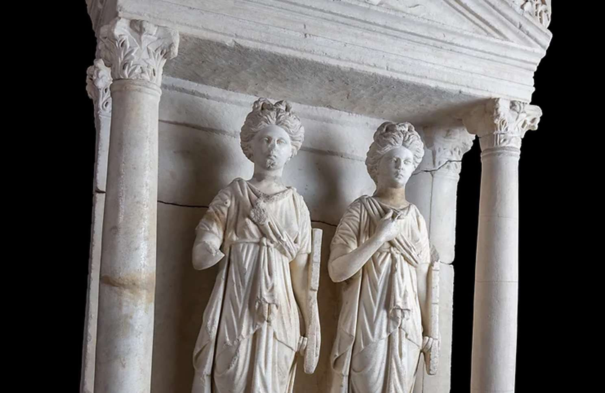
A marionete, por xetobyte. Os diversos determinismos científicos e políticos dos séculos XVIII–XXI reduzem o ser humano a um joguete das forças físicas, da sua genética, da sua neurologia ou da economia.
A partir do Iluminismo, surgem duas correntes opostas sobre a liberdade humana.
Por um lado, a afirmação total da liberdade, entendida como ausência de toda a coerção e exercida sobretudo no âmbito político.
Por outra, apoiada no materialismo e naturalismo científicos, a de um determinismo absoluto: todos os acontecimentos seriam determinados por causas físicas anteriores, e portanto não haveria espaço para o acaso nem para a liberdade humana.
Hegel pensa que a história é inteiramente determinada por uma dialética espiritual, e Marx por uma dialética materialista econômica, e o nazismo pela seleção racial. A liberdade, portanto, não existe. Este pensamento alimentou as matanças perpetradas por esses regimes.
No entanto, abalada mas firmemente apoiada na experiência pessoal, a liberdade subsiste.
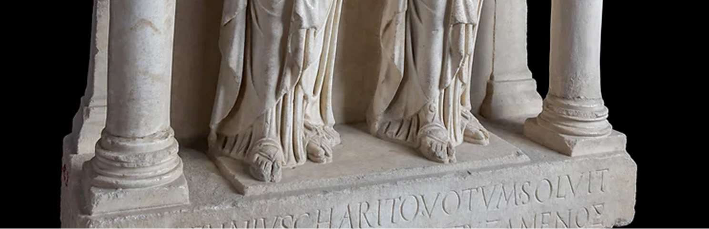
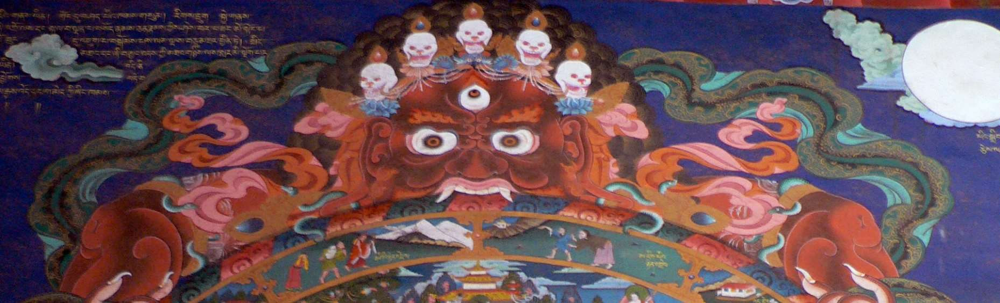
O Morro das Cruzes, em Šiauliai, Lituânia. Para cada pessoa morta ou desaparecida durante o governo comunista, uma cruz ou imagem era erguida neste lugar. Estima-se que em 2006 contivesse 100.000 cruzes.
Apesar de todos os determinismos — religiosos, científicos e políticos — a experiência pessoal de cada ser humano atesta a realidade da liberdade.
O Morro das Cruzes é um testemunho de que, mesmo sob a opressão mais violenta, o ser humano insiste em afirmar sua liberdade e sua fé.
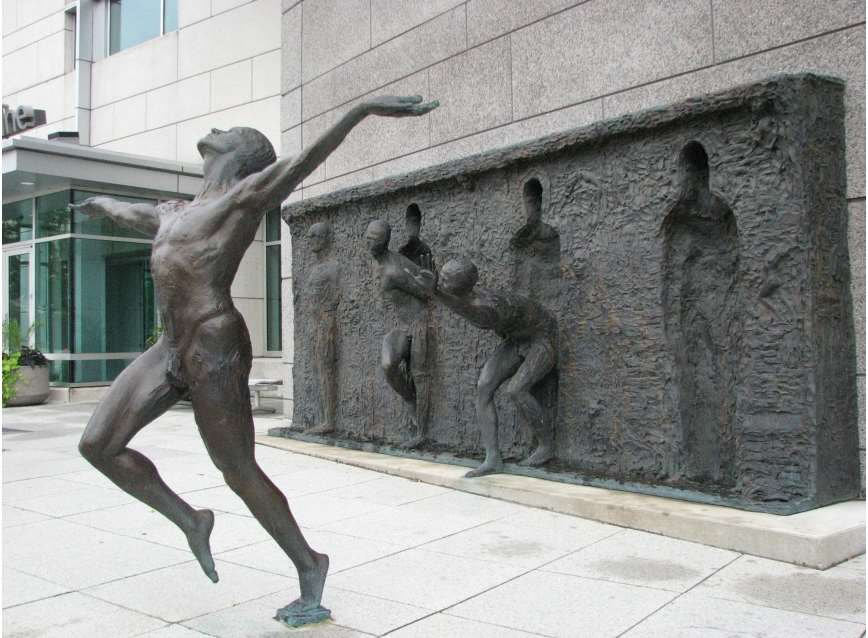
Liberdade, de Zenos Frudakis, 2000, Philadelphia, PA. Abalada mas firmemente apoiada na experiência pessoal, a liberdade subsiste.